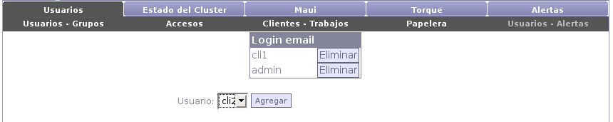

Next: Maui Up: Usuarios Previous: Papelera Contents
Existe un grupo ``virtual'' de usuarios a los cuales le seran asignadas alertas , definidas de interes general, del sistemas. Estas alertas avisan a los usuarios del grupo de algun problema o situación importante o critica del sistema, por ejemplo si algun trabajo de un usuario supero su cuota de espacio en disco.
Para agregar un usuario a este grupo debemos seleccionarlo del combo de usuarios y seleccionar ``Agregar''.
